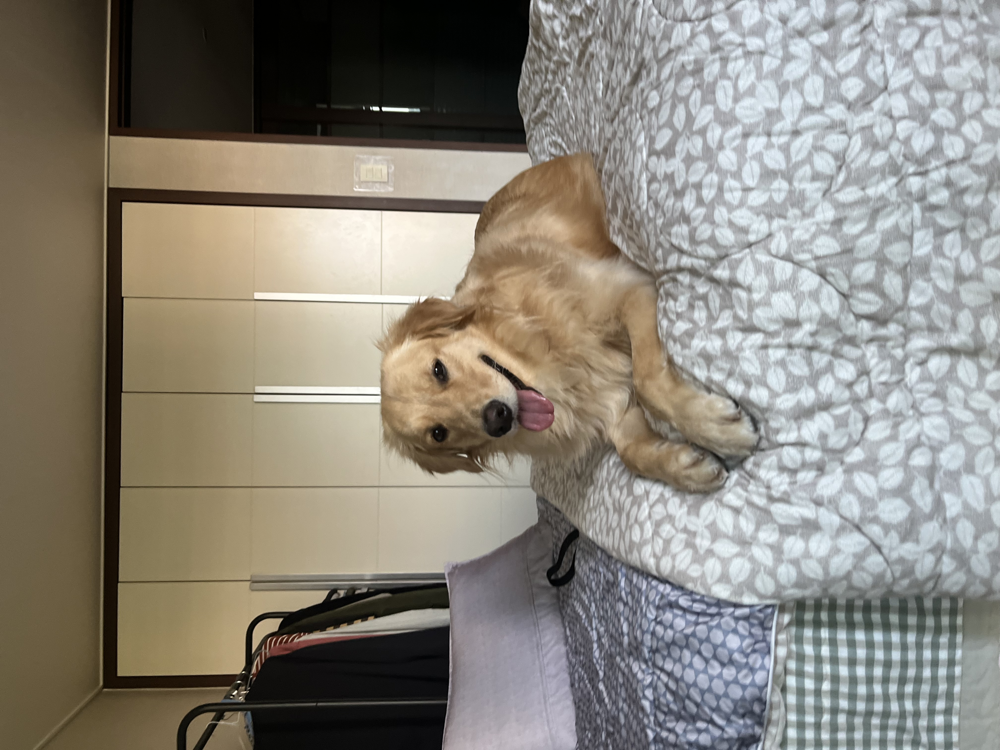

Skip to Main Content
Welcome to your GO-TO page, your go-to destination for all things pets, recipes, and travel! Explore a world of captivating content where we cater to your love for furry companions, culinary delights, and globetrotting adventures.

This is a page that introduces my personal hobbies, favorites, and go-to places

Please read through the content and think about your favorites as well!
This is going to be a good opportunity for you to reflect on what you should be prioritizing in your life
Remember work and financial goals are not everything. We exist because we exist, and also because our loved families exist.